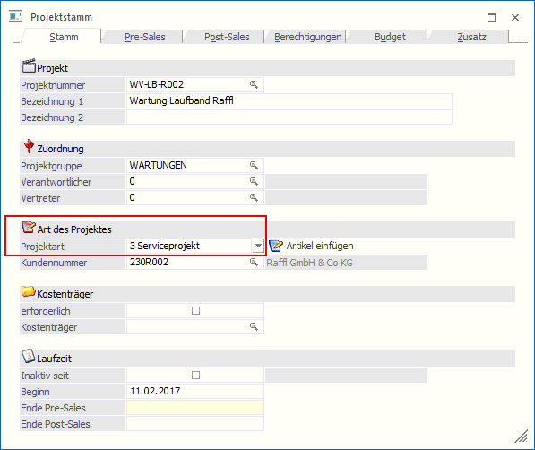
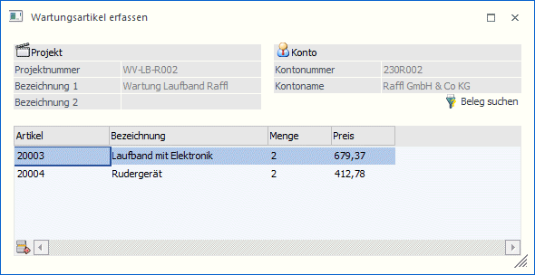
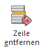
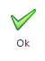
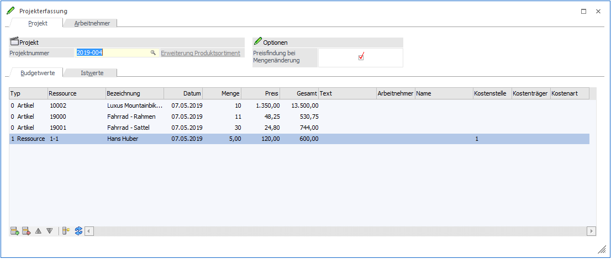

Bei der Anlage eines Projektes im Menüpunkt…
1 Stammdaten
1 Projektverwaltung
1 Projektstamm
… muss der Typ auf Serviceprojekt gestellt werden.

Bei der Auswahl Serviceprojekt kann optional ein Kunde hinterlegt werden. D.h. das Serviceprojekt muss nicht zwingend mit einem Kunden verknüpft sein. In diesem Beispiel ist dies jedoch ein Projekt für den Kunden 230R002.
Nach Drücken des Buttons "Artikel einfügen" wird das Fenster "Wartungsartikel erfassen" geöffnet, in dem die Serviceartikel eingetragen oder mittels des Matchcodes gesucht werden. (Achtung! Es werden nur jene Artikel angezeigt, die im Artikelstamm im Register Lager beim Typ Serviceprojekt "eröffnen" eingestellt haben.)

Buttons (Wartungsartikel erfassen)
Es besteht auch die Möglichkeit alle Artikel aus einem Beleg zu übernehmen. Wurden z.B. mehrere Geräte an einen Kunden geliefert, dann können diese auf einmal in das Serviceprojekt übernommen werden. Über den Button "Beleg suchen" wird der Beleg Match geöffnet und der entsprechende Beleg kann mit einem Doppelklick ausgewählt werden. Es werden automatisch alle Artikel des Beleges, die das Kennzeichen Serviceprojekt hinterlegt haben, in dieses Fenster übernommen.

Mit Hilfe des Entfernen-Buttons können Artikel, die nicht in das Projekt übernommen werden sollen wieder entfernt werden.
Für die Projektauswertung ergibt sich folgender Unterschied:
Wenn bei einem Serviceprojekt Artikel hinzugefügt werden, dann werden diese bei den Istzeiten mit dem Hinweistext "Serviceprojekt-Eröffnung" angezeigt. Werden die Artikel nicht direkt eingetragen sondern über einen Beleg hinzugefügt, der die Projektnummer bereits eingetragen hat, dann werden diese nicht bei den Istwerten als Eröffnungszeilen aufgelistet, da diese dann bereits beim Beleg in der Projektauswertung angeführt werden.

Mit dem OK-Button wird der Inhalt der Tabelle ins Projekt übernommen.
Im Reiter Budget können durch Drücken des Buttons "Budget" die Budgetwerte erfasst werden. Dies könnte z.B. der geschätzte Zeitaufwand oder auch die möglichen Ersatzartikel sein, die erfahrungsgemäß bei einer Wartung benötigt werden.
